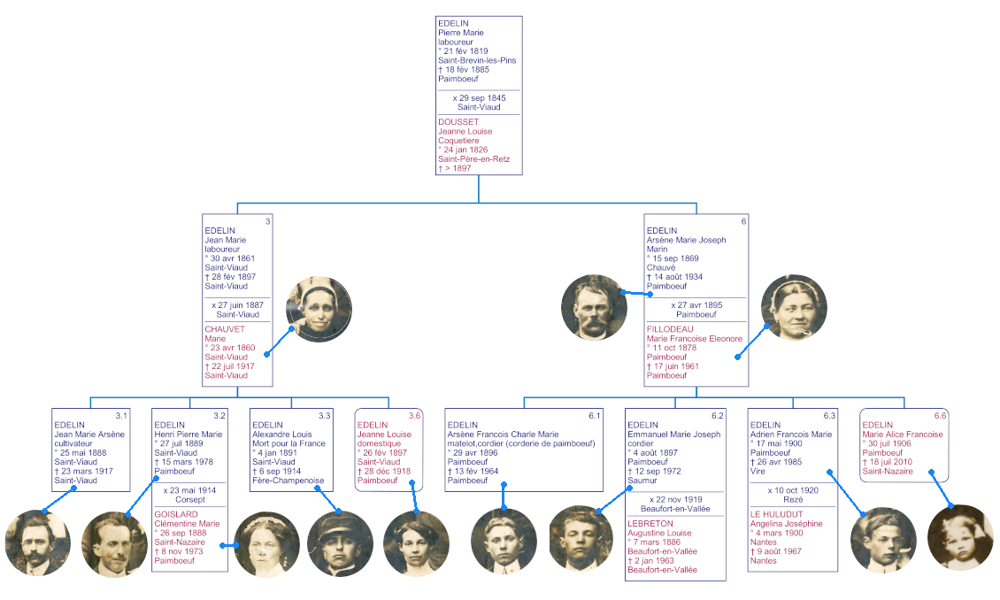
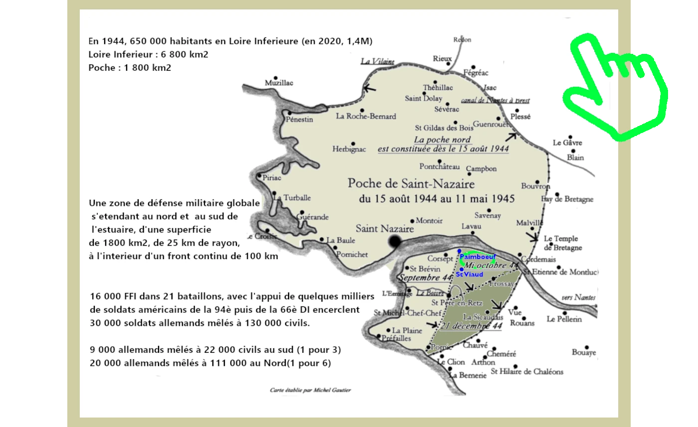

Henri et Clémentine
Eglise St Vital de St Viaud Loire Atlantique (23 mai 1914)


Henri EDELIN et Clémentine GOISLARD au centre.
Scéne immortalisant l'événement prés de l'église de St Viaud, famille et amis réunis.
Le mariage civil a eu lieu à Corsept le même jour.
Branche généalogique Edelin-Goislard des présents sur la photo de mariage


Jean MORANTIN et Marie LECOQ
Cantin St Viaud (17 juin 1924)
Jean MORANTIN et Marie LECOQ au centre
à la ferme de Cantin St Viaud en pésence notamment d'Henri EDELIN et Clémentine GOISLARD, ainsi que leurs enfants Thérese,Henri et Marcel
Henri EDELIN et Marie LECOQ sont cousins issus de germains
Lien familliale entre la mariée Marie LECOQ et son cousin 6e degré Henri EDELIN
Geneviève LECOQ-LECORPS petite cousine d'Henri EDELIN par la Branche DOLU (voir ci-dessus) nous raconte comment
elle a vecu les événements de La Poche de St Nazaire sur Paimboeuf et St Viaud en 1944-45
Plan de Paimboeuf et St Viaud précisant les lieux géographiques evoqués dans le récit de Geneviève
